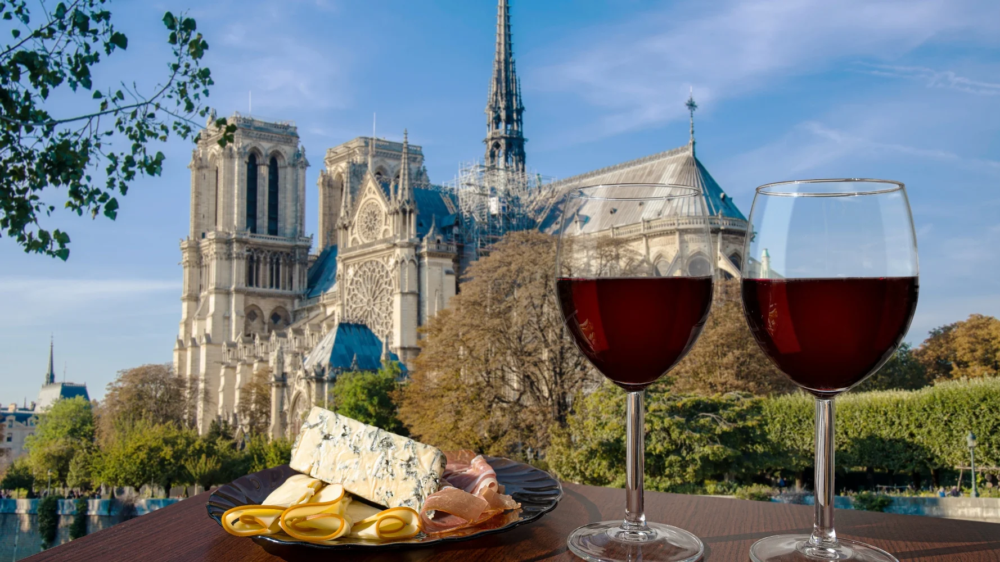

Welcome to my travel blog! I'm Pratik samanta , a full stack developer who loves
explore the world
join me on my journey to discover amazing destinations and cultures around the globe. This blog will
showcase my travel adventures ,photography, and insights from the road. whether you'rea fellow wanderlust or
an armchair traveler,I hope you enjoy following allong on my trips near andfar. Le's expolore this beautiful
planet together!
you did not score good in final project
My Adventure in Iceland
i recently fulfiled my dream of visiting Iceland! This fascinating country is truly a
land of
extremes -from glaciers and volcanoes to hot springs and lava fields.Some highlights from my trip:
hiked up to see the stunning skogafoss waterfall which drops 60m over a
cliff.
went snowmobiling on the Myrdalsjokull. glacier unde the monlight.
relaxed in the warm.mineral-rich watersof the Lagoon geaothermal spa
Watched the mesmerizing Northem Lights dance across the night sky
The Foodie's Guide to Italy
They say the best part of traveling in Italy is the food - and I wholeheartedly agree!
Here are some
highlights from my culinary adventures in Italy:
Tried traditional Neapolitan pizza with fresh buffalo mozzarella cheese and
sweet San Marzano
tomatoes.
sampled the finest authentic pasta dishes like cacio e pepe, carbonara,and
bolognese.
Indulghes in scoops of velvety gelato in vibrant flavors like pistachio,
stracciatella ,and
tiramisu.
Sipped refreshing Aperol Spritz cocktails and Italian wine like chianti in
streetside cafes.
Wine tasting in France
I had an amazing btime touring the vineyards and wineries of France! As a wine lover ,
it was a dream to
visit some of the world's most renowned wine regions.

In Bordeaux, I sampled incredible Cabernets and Merlots while soaking in
the charming and medieval
villages along the river.In Burgundy ,I biked around quaint towns and tasted dazzling pinot Noirs and
Chardonnays .My favorite was Champagne, where touring the underground cellers and sipping bubbly was the
perfect end to my wine adventures.
About me
Hi there, I'm Pratik Samanta and I created this blog to share my passion for travel and
adventure!
As a FULL STACK DEVELOPER by profession, travel provides the perfect outlet for my
curiosity and creativity. This blogs allows me to connect with like-mindes travelers while documenting
my own journey around the globe.
I hope my stories, photos and tips will inspire you to step out of your comfort zone, explore new
places,and create your own memorable experience.Thanks for joionong me!